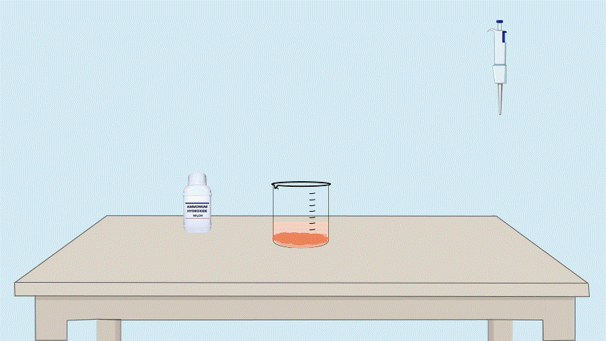
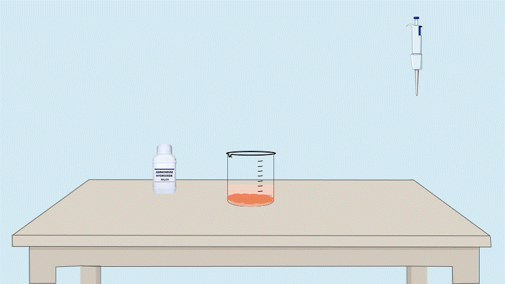

Determination of Iron Oxide and Aluminium Oxide
Step 1:Take another portion of the filtrate and Add ammonium hydroxide (NH₄OH) until a brownish-red precipitate appears.
About this step:
In this step, we will take a portion of filtrate and will Add ammonium hydroxide (NH₄OH) until a brownish-red precipitate appears.
Add NH₄OH until a brownish-red precipitate forms
 

👇